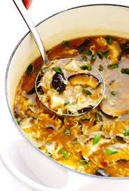
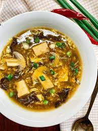
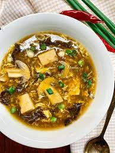

Double Chocolate Cookies
Origin: Michigan Source: Family Recipe Category: Dessert
My daughter learned to make these cookies at a baking camp at Zingermanns and has tweaked the recipe to fit the taste buds of her siblings. They are extremely sugary so the salt helps to balance it. Note, these cookies are best eaten very quickly.
Recipe Ingredients
- Unsalted butter
- Granulated Sugar
- Packed light or dark brown sugar
- Large egg
- Pure vanilla extract
- Semi-sweet chocolate chunks (melted)
- All-purpose flour
- Natural unsweetened cocoa powder
- Baking soda
- Salt
- Semi-sweet chocolate chunks
Recipe Steps
- In a mixing bowl cream together the butter, granulated sugar, and brown sugar
- Add the egg and vanilla extract and beat well
- Add the melted chocolate
- In a separate bowl combine the flour, baking soda, cocoa powder and salt
- Combine the wet and dry ingredients
- Add the unmelted chocolate chunks.
- Form 15 cookies and place on a baking sheet.
- Cook for 12 to 13 minutes at 350 degrees.
Additional Food images


Tangcu Paigu (Sweet and Sour flavor rib)
Origin: China Source: Family Recipe Category: Main DishAlthough it is a classic Chinese dish, my mother tweaked the recipe for our family to fit our taste.
Recipe Ingredients
- pork ribs
- mashed rock sugar
- light soy sauce
- dark soy sauce
- cooking wine
- black vinegar
- ginger
- star anise
- onion
Recipe Steps
- Cut ribs into 1 inch to 1.5 inch sections. Place in a pot with cold water. Bring to boil and continue cooking for 2-3 minutes. Transfer out and rinse under running warm water. Set aside to drain.
- Add cooking oil and smashed rock sugar in wok, heat over slow fire. Keep stirring until the sugar melts and turns into dark red.
- Add ribs to coat the sugar color, place light soy sauce, cooking wine and black vinegar. Continue stir fry for 2 minutes and pour enough hot water to cover and add ginger, green onion and star anise.
- Cover the lid and simmer for 25 minutes over slowest fire. Stir once or twice in the process. Pick the ginger, green onion and star anise out in the later stage.
- Turn up the fire and thicken the fire. Keep stirring and stop when the sauce is almost adhered to the ribs. Be carefully in the last minutes, do not get your ribs overcooked.
- Add extra 1 teaspoon of black vinegar and sesame seeds. Combine well.
- Garnish chopped spring onions before serving.
Additional Food images
Chinese Hot and Sour Soup
Origin: China Source: Family Recipe Category: Soup Chinese Hot and Sour Soup is a popular and flavorful soup known for its spicy and tangy taste. It's made with a variety of ingredients including tofu, mushrooms, and bamboo shoots.
Recipe Ingredients
- tofu
- mushrooms
- pork
- bamboo shoots
- soy sauce
Recipe Steps
- Boil
- Simmer
- Cooking
- Dipping sauce
Additional Food images
 


Zucchini Fritters
Origin: Unknown Source: Family Recipe Category: Appetizer
I found this recipe for zucchini fritters on a food blog when I was looking for quick and easy dishes to make during undergrad. It uses minimal ingredients and can be done in less than half an hour. They’re delicious and filling and go great with dipping sauces.
Recipe Ingredients
- zucchini
- egg
- flour
- garlic
- salt
- pepper
- oil
Recipe Steps
- Combine eggs, salt, pepper and whisk
- Add pressed garlic
- Grate the zucchini and squeeze the moisture out of it
- Add zucchini and flour and mix
- Heat oil in a pan and dollops of batter
- Serve with or without dipping sauce
Additional Food images


Swedish Pancakes
Origin: Sweden Source: Kristi Category: Breakfast
Swedish pancakes (Pannkaka [singular] or Pannkakor [plural] in Swedish) are one of the most well-known Scandinavian delicacies, and rightfully so. Tender, buttery and often served with butter and lingonberry jam, there is much to account for their popularity.
Recipe Ingredients
- butter
- eggs
- flour
- milk
- sugar
- salt
- vanilla
Recipe Steps
- Combine all ingredients in a blender and blend until completely smooth.Transfer to the refrigerator to rest for at least 2 hours or up to 2 days.
- Preheat oven to 200 degrees if you plan to eat the pannkakor right away. Heat a 10 inch nonstick skillet over medium heat. Stir the batter briefly to recombine. Brush skillet with melted butter. Pick the skillet up off of the burner and quickly add ¼ cup of batter. Immediately begin swirling the batter around the skillet so that it coats the bottom of the pan. Continue swirling until the batter is just set. Return skillet to the burner. Cook until the pancake is golden brown in spots on the bottom, about 30 seconds. Use a thin spatula to loosen the pancake, flip it over continue to cook on the other side for about 30 seconds. Transfer to a plate. Cover with foil and transfer to oven to keep warm and repeat with remaining batter, wiping out skillet in between pancakes with paper towel as needed.
- Serve with lingonberry jam and butter or other desired toppings and/or fillings. See notes below for more information about making ahead of time and storing in the refrigerator or freezer.
Additional Food images